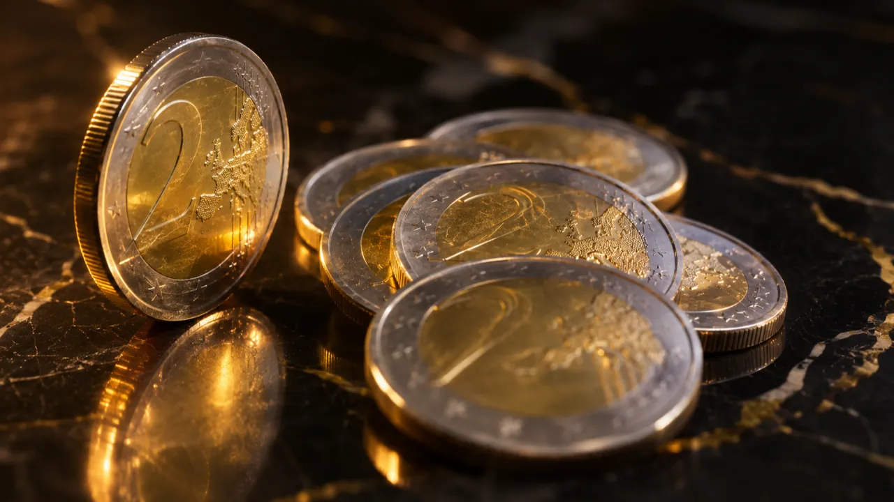

Which 2 euro coins are worth money?
Short answer
Monaco’s Grace Kelly and fortress coins and the 2024 Cyprus commemorative are among the valuable examples. The prices apply to collector editions.
You shake some change out of a coat pocket and pick out the 2 euro coins. Three of the most valuable examples to know are Monaco’s 2007 Grace Kelly and 2015 fortress issues, and the 2024 commemorative from Cyprus. Collector prices for those editions run into the hundreds or thousands of euros.
Start with the picture and the date on the national side. If the design matches, check which version you are looking at. Cases came with the most expensive issues on this list. The price ranges apply to uncirculated coins or special proof editions, depending on the issue and the packaging.
The two Monaco coins to look for
Princess Grace faces left on the 2007 coin, with MONACO and the date curved around the lower right. Monaco issued it in a case in brilliant uncirculated condition, usually shortened to BU. The official mintage is 20,000 and the collector range is about €2,300 to €3,359. It went to collectors and never officially entered circulation.
For the fortress coin, look for a tower on the Rock of Monaco and the words FONDATION DE LA FORTERESSE between 1215 and 2015. The proof issue was limited to 10,000 and came in a case with a numbered certificate. Its collector range is roughly €1,750 to €3,078. Those two Monaco coins each have their own design, finish and range, so match the date before looking up a price.
Cyprus and Vatican City
The Cyprus design from 2024 marks twenty years of EU membership. Look for the date and the country lettering. The whole issue of 7,000 was sold in cases. The collector range runs from about €972 to €1,306. Finding a coin in its original packaging helps when you compare it with a listing for that edition.
The Vatican’s 2005 World Youth Day coin marks the event in Cologne. It had a mintage of 100,000 and a collector range of around €210 to €237. The Vatican sold it in sets and blisters, which makes it a rare sight in everyday change.
A map that can turn up in change
Finland’s 2006 coin with the newer map is one you could actually find in change. The year on the national side is 2006, while the common side shows the map design from 2007. Check both faces, since only some coins from the year have that combination. About €116 is the catalogue figure for an uncirculated coin with the newer map.
Estimates put the number of Finnish coins with the newer map at around 50,000 to 55,000, out of more than 8.5 million 2 euro coins dated 2006. So if you spot the date, compare the common side with a picture of the 2007 map. The date narrows your search to the right year, and the map tells you whether you have the variant.
Check it yourself
Put your coins on a table and take a photo with Euroreveal. The app helps identify the coin and shows what it could be worth.
The 2024 Cyprus commemorative 2 euro coin was issued in rolls.
Show the answer
False. The issue ran to 7,000 coins, sold in cases.